<title>Our Promise Ideas</title>
<meta name="claude:viewport-fit-sides" content="cover">
<link rel="preconnect" href="https://fonts.googleapis.com">
<link rel="preconnect" href="https://fonts.gstatic.com" crossorigin>
<link rel="stylesheet" href="https://fonts.googleapis.com/css2?family=Ysabeau+Office:wght@400;500;600&display=swap">
<style>
  /* Layout: one column like a scroll. First the part as it is today (four grey ink dots), then three
     ideas for the About page's "Our promise" part, each a card with the real page (laptop
     beside phone), its score and what still holds it back. The site's own paper and ink, one gold
     for the recommendation. */
  :root {
    --paper: #f4f0e6;
    --card: #faf7f0;
    --ink: #171512;
    --ink-soft: #5d574d;
    --rule: #d9d2c1;
    --gold: #7a5a14;
    --gold-bg: #f1e4c4;
    --ask: #1f3d2b;
    --ask-bg: #e3ebdf;
    --shot-bg: #f3efe4;
    --title: "Ysabeau Office", "Iowan Old Style", Georgia, serif;
    --body: system-ui, -apple-system, "Segoe UI", Roboto, sans-serif;
  }
  @media (prefers-color-scheme: dark) {
    :root:not([data-theme="light"]) {
      --paper: #1b1915;
      --card: #24211c;
      --ink: #f1ece0;
      --ink-soft: #b6ae9e;
      --rule: #3a362e;
      --gold: #f0d39a;
      --gold-bg: #3d3220;
      --ask: #cfe3c6;
      --ask-bg: #2b3a2c;
      --shot-bg: #2a2620;
      color-scheme: dark;
    }
  }
  :root[data-theme="dark"] {
    --paper: #1b1915;
    --card: #24211c;
    --ink: #f1ece0;
    --ink-soft: #b6ae9e;
    --rule: #3a362e;
    --gold: #f0d39a;
    --gold-bg: #3d3220;
    --ask: #cfe3c6;
    --ask-bg: #2b3a2c;
    --shot-bg: #2a2620;
    color-scheme: dark;
  }
  body {
    background: var(--paper);
    color: var(--ink);
    font: 17px/1.5 var(--body);
  }
  .wrap {
    max-width: 980px;
    margin: 0 auto;
    padding-left: max(16px, env(safe-area-inset-left, 0px));
    padding-right: max(16px, env(safe-area-inset-right, 0px));
    padding-block: 32px 72px;
    display: grid;
    gap: 28px;
  }
  header {
    display: grid;
    gap: 10px;
  }
  h1 {
    font: 600 38px/1.08 var(--title);
    margin: 0;
    text-wrap: balance;
  }
  .lede {
    margin: 0;
    max-width: 38em;
    color: var(--ink-soft);
  }
  .note {
    margin: 0;
    max-width: 40em;
    padding: 12px 14px;
    border-radius: 10px;
    border: 1px dashed var(--rule);
    font-size: 15px;
    color: var(--ink-soft);
  }
  .card {
    background: var(--card);
    border: 1px solid var(--rule);
    border-radius: 14px;
    padding: 18px;
    display: grid;
    gap: 14px;
  }
  .card h2 {
    font: 600 26px/1.2 var(--title);
    margin: 0;
    display: flex;
    flex-wrap: wrap;
    align-items: baseline;
    gap: 6px 12px;
    text-wrap: balance;
  }
  .tag {
    font: 700 22px/1 var(--title);
    color: var(--ink);
  }
  .badge {
    font: 600 13px/1 var(--body);
    color: var(--gold);
    background: var(--gold-bg);
    padding: 5px 9px;
    border-radius: 99px;
  }
  .card ul.notes {
    margin: 0;
    padding-left: 1.2em;
    display: grid;
    gap: 4px;
    max-width: 44em;
  }
  .score {
    margin: 0;
    color: var(--ink-soft);
    font-size: 15px;
    max-width: 44em;
  }
  .score b {
    color: var(--ink);
  }
  .shots {
    display: grid;
    grid-template-columns: 3fr 1fr;
    gap: 12px;
    align-items: start;
  }
  figure {
    margin: 0;
    display: grid;
    gap: 6px;
    min-width: 0;
  }
  figure img {
    display: block;
    width: 100%;
    height: auto;
    max-width: 100%;
    border-radius: 8px;
    border: 1px solid var(--rule);
    background: var(--shot-bg);
  }
  figcaption {
    font-size: 14px;
    color: var(--ink-soft);
  }
  .stack {
    display: grid;
    gap: 12px;
    min-width: 0;
  }
  .section-title {
    font: 600 28px/1.15 var(--title);
    margin: 12px 0 0;
  }
  .ask {
    background: var(--ask-bg);
    border-radius: 14px;
    padding: 18px;
    display: grid;
    gap: 10px;
  }
  .ask h2 {
    font: 600 24px/1.2 var(--title);
    margin: 0;
    color: var(--ask);
  }
  .ask ol {
    margin: 0;
    padding-left: 1.4em;
    display: grid;
    gap: 8px;
    max-width: 44em;
  }
  details.earlier summary {
    cursor: pointer;
    font: 600 20px/1.3 var(--title);
  }
  details.earlier summary:focus-visible {
    outline: 2px solid var(--gold);
    outline-offset: 4px;
    border-radius: 6px;
  }
  details.earlier[open] summary {
    margin-bottom: 8px;
  }
  footer {
    font-size: 14px;
    color: var(--ink-soft);
    max-width: 44em;
  }
  @media (max-width: 640px) {
    h1 {
      font-size: 32px;
    }
    .shots {
      grid-template-columns: 1fr;
    }
    .shots > figure.phone {
      max-width: 300px;
    }
  }
  /* B and C side by side (Mo asked to compare them): two columns, B left, C right, at every width,
     so the same view of each sits level. */
  .pair {
    display: grid;
    grid-template-columns: repeat(2, minmax(0, 1fr));
    gap: 10px;
    align-items: start;
  }
  .pair-label {
    font: 600 18px/1.2 var(--title);
    color: var(--ink);
    margin: 0 0 2px;
  }
  .pair video,
  .compare video {
    display: block;
    width: 100%;
    height: auto;
    max-width: 100%;
    border-radius: 8px;
    border: 1px solid var(--rule);
    background: var(--shot-bg);
  }
  .stack-wide {
    display: grid;
    gap: 14px;
  }
  .compare h3 {
    font: 600 20px/1.25 var(--title);
    margin: 6px 0 0;
  }
  .verdict {
    margin: 0;
    padding-left: 1.2em;
    display: grid;
    gap: 6px;
    max-width: 44em;
  }
  /* The close-up of an idea's four small paintings, on the page's paper. */
  figure.strip img {
    border-radius: 8px;
    background: var(--shot-bg);
  }
</style>

<main class="wrap">
  <header>
    <h1>Our promise, in California colour</h1>
    <p class="lede">You said "Let's try A". It's built: the coloured dots are now on the page, on my computer. It's first below. B and C follow.</p>
    <p class="note">A is shot on the built site. B and C are still mockups (the pictures dropped into the live page in the browser). The heading, the four promises and the layout don't change. Nothing is live yet.</p>
  </header>

  <h2 class="section-title">A, built</h2>
  <section class="card compare" aria-labelledby="built">
    <h2 id="built">The same dots, in colour</h2>
    <ul class="notes">
      <li>Poppy orange, golden-hill gold, Pacific blue, sage green: the colours of the page's own paintings.</li>
      <li>The same size as the grey dots were. They still appear one after another as you scroll to them.</li>
    </ul>

    <h3>Laptop</h3>
    <div class="stack-wide">
      <figure></figure>
      <figure><figcaption class="pair-label">Scrolling down to it (the film loops)</figcaption><video src="web/film-built-desk.mp4" width="1280" height="800" autoplay muted loop playsinline aria-label="A built, on a laptop: scrolling down from the sequoia, the four coloured dots appear one after another"></video></figure>
    </div>

    <h3>Tablet and phone</h3>
    <div class="shots">
      <figure>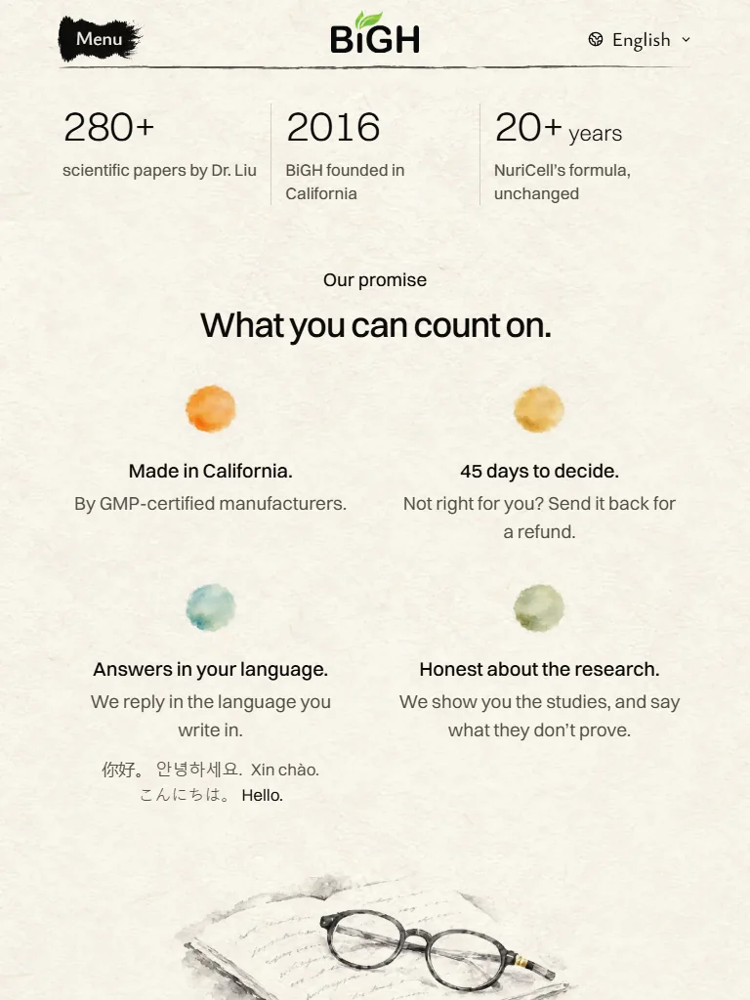<figcaption>Tablet</figcaption></figure>
      <figure class="phone">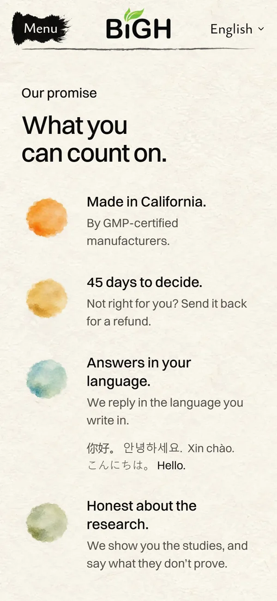<figcaption>Phone</figcaption></figure>
    </div>
    <div class="pair">
      <figure><figcaption class="pair-label">Phone, scrolling</figcaption><video src="web/film-built-phone.mp4" width="390" height="844" autoplay muted loop playsinline aria-label="A built, on a phone: scrolling down, each coloured dot appears as its row comes up"></video></figure>
    </div>

    <p class="score"><b>My score: 7.5/10</b>, the same as the mockup (it looks just like it). Calm, tidy and in the page's colours. Holding it back: the dots don't mean anything on their own.</p>
  </section>

  <h2 class="section-title">B and C, side by side</h2>
  <section class="card compare" aria-labelledby="bc">
    <h2 id="bc">Wildflowers (B) or one poppy (C)</h2>

    <h3>Close up</h3>
    <div class="stack-wide">
      <figure class="strip"><figcaption class="pair-label">B · Four wildflowers</figcaption>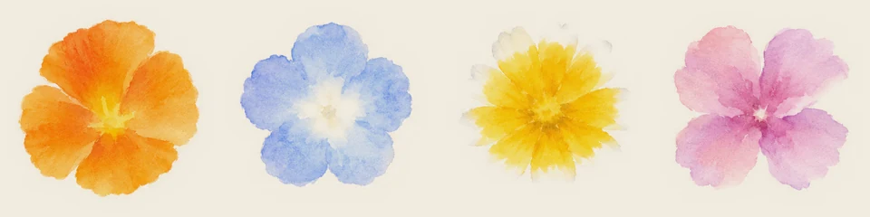</figure>
      <figure class="strip"><figcaption class="pair-label">C · One poppy, counting to four</figcaption>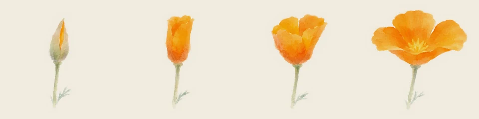</figure>
    </div>

    <h3>Laptop, the part at rest</h3>
    <div class="stack-wide">
      <figure><figcaption class="pair-label">B</figcaption>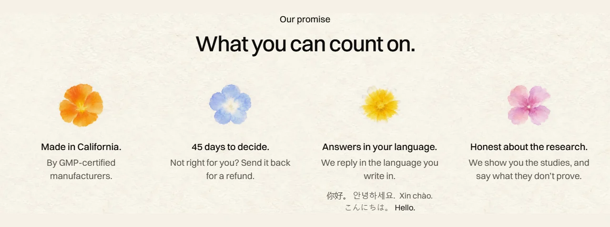</figure>
      <figure><figcaption class="pair-label">C</figcaption>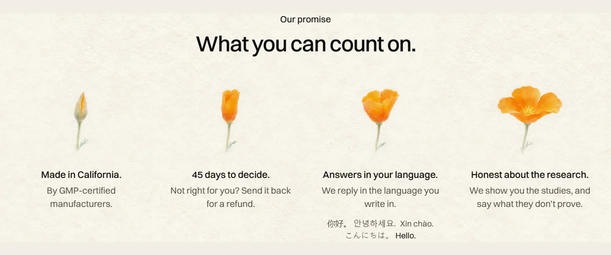</figure>
    </div>

    <h3>Laptop, scrolling down to it</h3>
    <p class="score">Each picture appears one after another as the part comes into view, as today's dots do. The films loop.</p>
    <div class="stack-wide">
      <figure><figcaption class="pair-label">B</figcaption><video src="web/film-b-desk.mp4" width="1280" height="800" autoplay muted loop playsinline aria-label="B on a laptop: scrolling down from the sequoia, the four wildflowers appear one after another"></video></figure>
      <figure><figcaption class="pair-label">C</figcaption><video src="web/film-c-desk.mp4" width="1280" height="800" autoplay muted loop playsinline aria-label="C on a laptop: scrolling down from the sequoia, the poppy appears from bud to bloom, left to right"></video></figure>
    </div>

    <h3>Phone</h3>
    <div class="pair">
      <figure><figcaption class="pair-label">B</figcaption>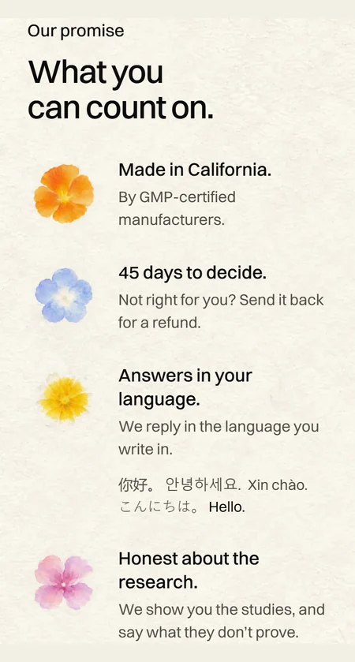</figure>
      <figure><figcaption class="pair-label">C</figcaption>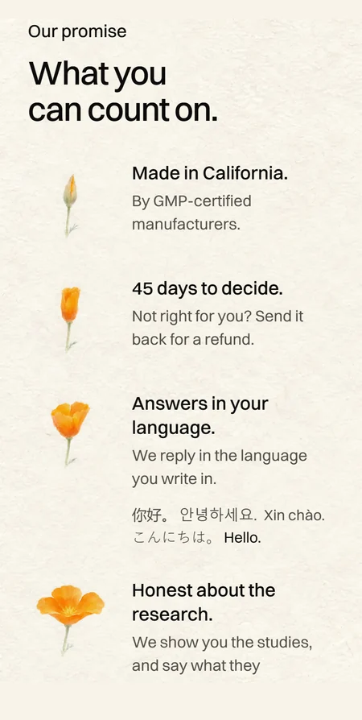</figure>
    </div>
    <div class="pair">
      <figure><figcaption class="pair-label">B, scrolling</figcaption><video src="web/film-b-phone.mp4" width="390" height="844" autoplay muted loop playsinline aria-label="B on a phone: scrolling down, each wildflower appears as its row comes up"></video></figure>
      <figure><figcaption class="pair-label">C, scrolling</figcaption><video src="web/film-c-phone.mp4" width="390" height="844" autoplay muted loop playsinline aria-label="C on a phone: scrolling down, the poppy opens a step with each row"></video></figure>
    </div>

    <h3>How they differ</h3>
    <ul class="verdict">
      <li><b>Colour:</b> B brings four colours (orange, blue, yellow, pink). C keeps one, poppy orange, like the meadow at the top of the page.</li>
      <li><b>Feel:</b> B is brighter and busier, like a little bouquet. C is quieter, like a flip-book.</li>
      <li><b>Meaning:</b> B gives each promise its own flower, but no flower matches its promise. C is one idea: count along, one to four.</li>
      <li><b>Weak spot:</b> B's flowers lie flat, a bit like stickers. C's bud on the left is small and pale.</li>
      <li><b>My pick is still C.</b> It's calmer, and it says "count on" without words. B is the better choice if you want more colour on the page.</li>
    </ul>
  </section>

  <h2 class="section-title">Live today</h2>
  <section class="card" aria-labelledby="today">
    <h2 id="today">Four grey ink dots</h2>
    <ul class="notes">
      <li>Black to pale grey, like an ink brush running dry.</li>
      <li>Still grey, right under the newly coloured sequoia.</li>
    </ul>
    <div class="shots">
      <figure>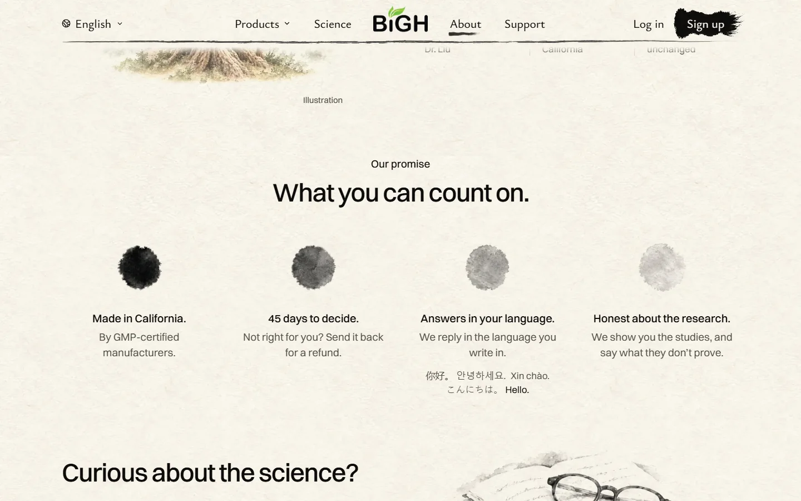<figcaption>Laptop, today</figcaption></figure>
      <figure class="phone">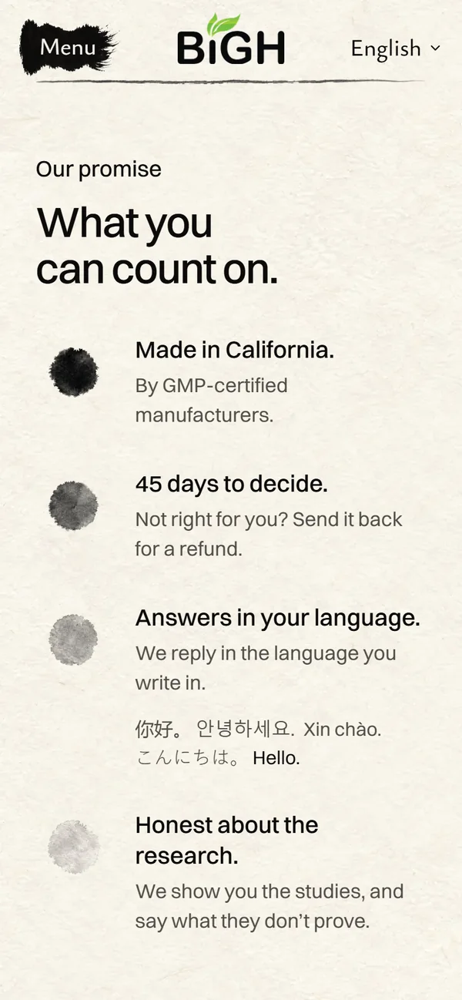<figcaption>Phone, today</figcaption></figure>
    </div>
  </section>

  <h2 class="section-title">All three ideas</h2>

  <section class="card" aria-labelledby="a">
    <h2 id="a"><span class="tag">A</span> The same dots, in colour</h2>
    <ul class="notes">
      <li>Four wet watercolour dots: poppy orange, golden-hill gold, Pacific blue, sage green.</li>
      <li>The colours of the page's own paintings above it.</li>
    </ul>
    <figure class="strip">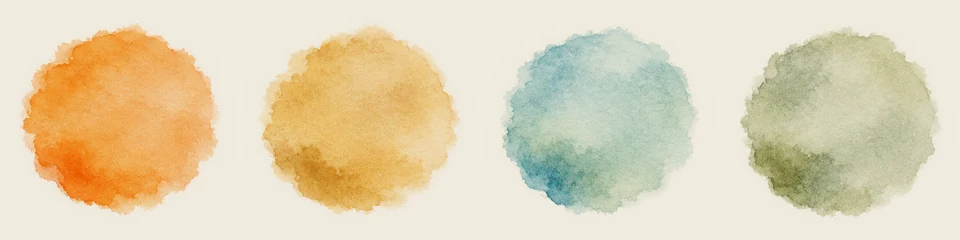<figcaption>Close-up of the four</figcaption></figure>
    <p class="score"><b>My score: 7.5/10.</b> Calm and colourful, the smallest change. Holding it back: they look like paint swatches. They mean nothing on their own.</p>
    <div class="shots">
      <figure>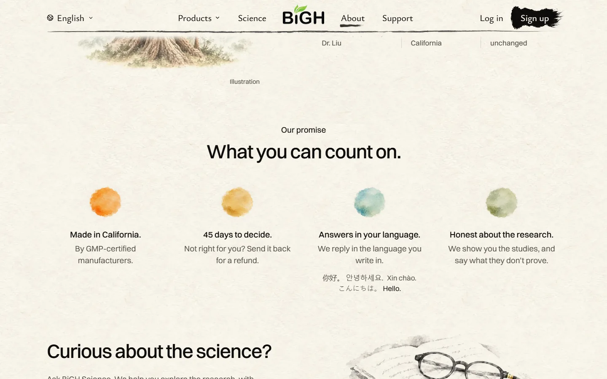<figcaption>Laptop</figcaption></figure>
      <figure class="phone"><figcaption>Phone</figcaption></figure>
    </div>
  </section>

  <section class="card" aria-labelledby="b">
    <h2 id="b"><span class="tag">B</span> Four California wildflowers</h2>
    <ul class="notes">
      <li>A California poppy, baby blue eyes, tidy tips and farewell-to-spring. All four grow wild here.</li>
      <li>Each promise gets its own flower, seen from above.</li>
    </ul>
    <figure class="strip"><figcaption>Close-up of the four</figcaption></figure>
    <p class="score"><b>My score: 8/10.</b> Cheerful and clearly flowers. Holding it back: four colours make the row a little busy. Seen flat from above they look a bit like stickers. The flowers don't connect to their promises.</p>
    <div class="shots">
      <figure>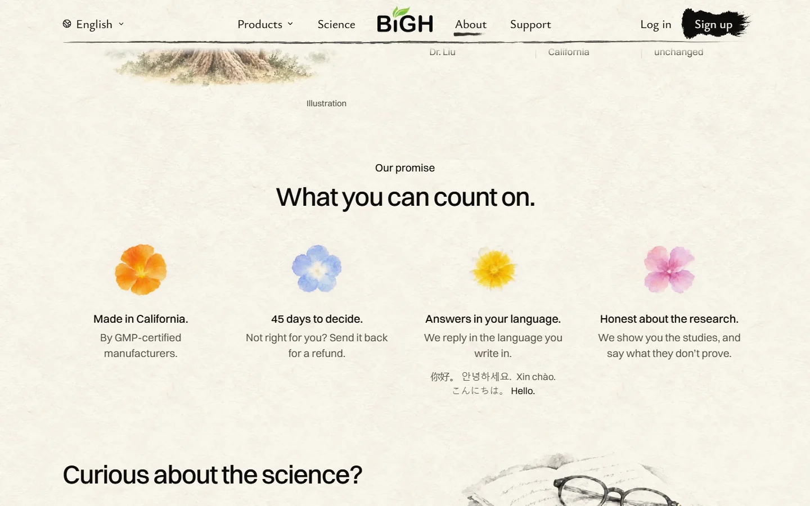<figcaption>Laptop</figcaption></figure>
      <figure class="phone">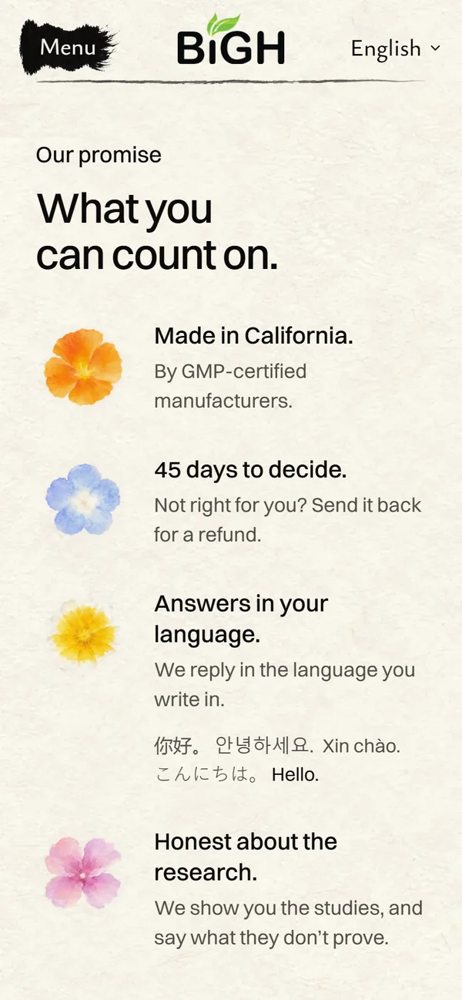<figcaption>Phone</figcaption></figure>
    </div>
  </section>

  <section class="card" aria-labelledby="c">
    <h2 id="c"><span class="tag">C</span> One poppy, counting to four <span class="badge">My pick</span></h2>
    <ul class="notes">
      <li>The California poppy opening in four steps: a closed bud, then wider, then wide open.</li>
      <li>One flower, one idea. You count along with "What you can count on."</li>
      <li>Like today's dots, they would appear one after another as you scroll. So the poppy opens left to right. (Not shown in these still shots.)</li>
    </ul>
    <figure class="strip"><figcaption>Close-up of the four</figcaption></figure>
    <p class="score"><b>My score: 8.5/10.</b> The state flower, light and elegant, and it reads as a little story. On a phone it opens as you scroll down. Holding it back: the bud on the left is small and pale. And step 1 doesn't mean "Made in California" by itself: it's a count, not one picture per promise.</p>
    <div class="shots">
      <div class="stack">
        <figure>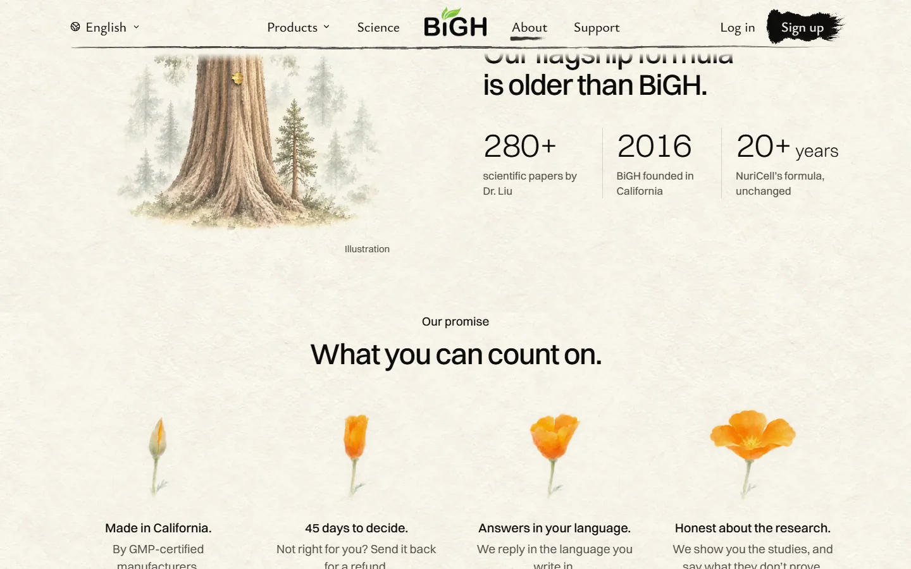<figcaption>Laptop, arriving from the sequoia</figcaption></figure>
        <figure>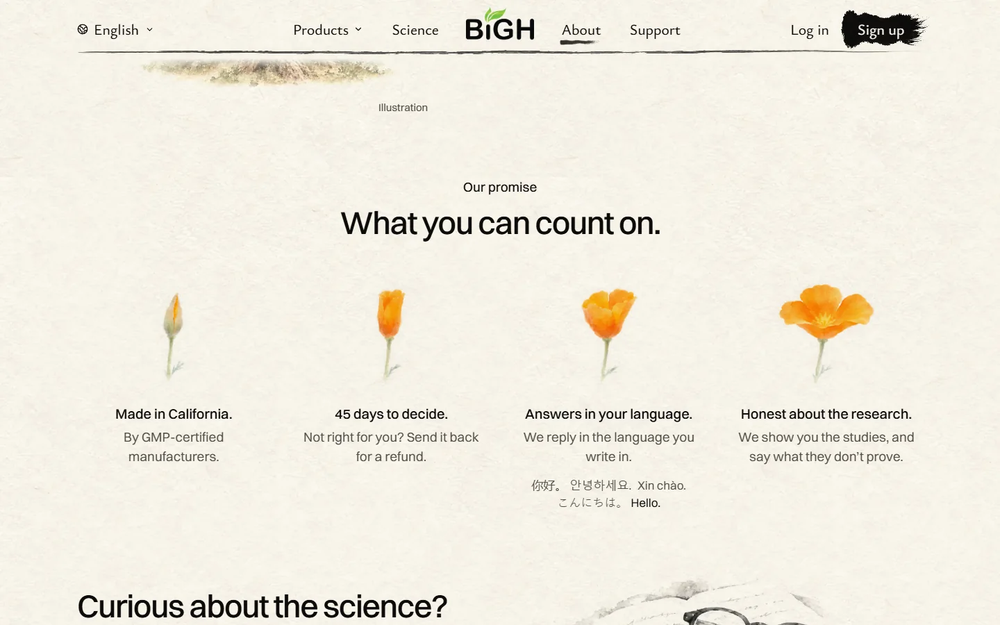<figcaption>Laptop, at rest</figcaption></figure>
        <figure>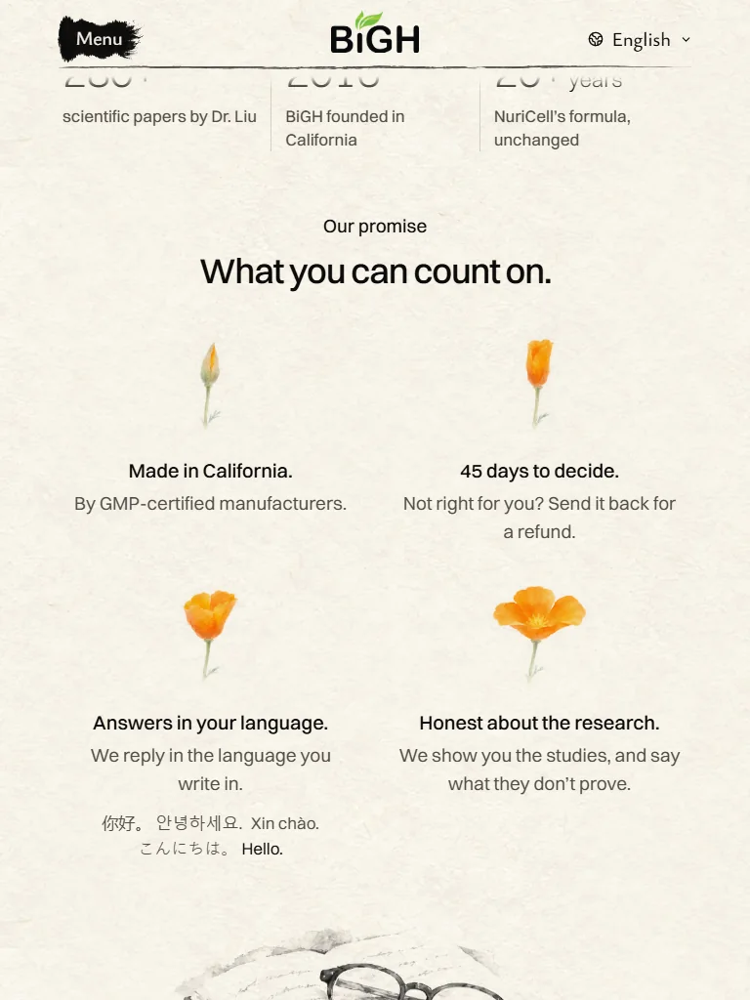<figcaption>Tablet</figcaption></figure>
      </div>
      <figure class="phone">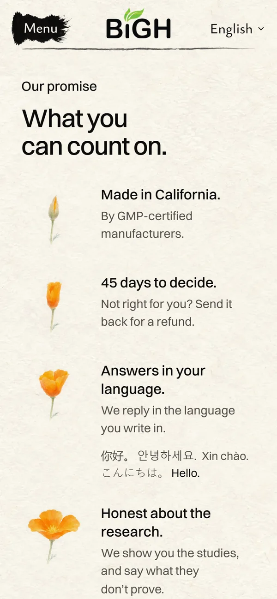<figcaption>Phone</figcaption></figure>
    </div>
  </section>

  <section class="ask" aria-labelledby="ask">
    <h2 id="ask">Which one?</h2>
    <ol>
      <li>Reply <b>A</b>, <b>B</b> or <b>C</b>. Or tell me something else to try.</li>
      <li>Once you pick, I'll build it, check it on the built site and show you.</li>
    </ol>
  </section>

  <footer>Paintings by Codex in loose watercolour, cut onto the page's paper. Shots of the public demo, November 12, 2026.</footer>
</main>
